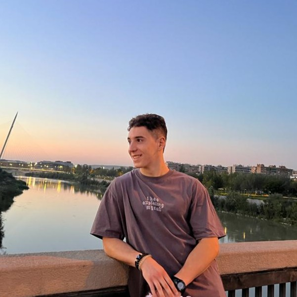

About Me

Hi, I'm Jokin Oteiza Ollo. I am a dual-degree Software Engineer and Videogame Developer currently in my final year at Universidad San Jorge, expecting to graduate in June 2026. My work primarily focuses on both the implementation of gameplay systems and graphics programming.
My academic background includes 17 university honors in subjects like Real-Time Rendering, Game Engines, Multiplayer Games and AI, giving me a solid foundation for writing clean, optimized code. Over the last five years, I have focused heavily on developing engaging mechanics and systems in Unity and C#. More recently, I have expanded my skill set into low-level graphics programming, building custom rendering pipelines and shaders using C++ and DirectX 11.
During my Game Programmer Internship at Kraken Empire, I developed emergent gameplay systems and ported mechanics for the sequel to Toy Tactics. Having also studied abroad in France and being fluent in four languages, I thrive in diverse, highly collaborative environments where I can translate complex technical challenges into engaging player experiences.
Beyond the code editor, I am an avid gamer who enjoys everything from major AAA releases to exploring highly experimental indie titles. When I step away from the screen, you can usually find me playing or watching football, training at the gym, or hiking in the mountains.
I am actively seeking Junior Graphics Programmer, Gameplay Programmer, or Technical Artist roles and internships. I am fully open to remote work or international relocation to contribute to technically ambitious titles.
Awards & Recognition
| Best 2D Game | Game of the Year Gala, Universidad San Jorge | 2026 |
| Awarded for The Last Crusade, a 2D top-down RPG mixing turn-based combat with quick-time events. | ||
| Best Elevator Pitch | Game of the Year Gala, Universidad San Jorge | 2023 |
| Awarded for the elevator pitch presenting Anima. | ||
| Honorary Mention | Game of the Year Gala, Universidad San Jorge | 2025 |
| Awarded for Rebellion, an asymmetric 3v1 board game that successfully blends area control, resource management and quick card-based combat mechanics. | ||
| Academic Honors | Universidad San Jorge | 2021-2026 |
| Earned Honors in 17 subjects, including Game Engines, Computer Graphics, Multiplayer Games, Real-Time Rendering, AI for Videogames, Linear Algebra and Calculus. | ||
Contact Information
I am currently looking for programming opportunities and am fully open to relocate internationally. The best way to reach me is via email or LinkedIn.
- Email: jokinoteiza@gmail.com
- LinkedIn: Jokin Oteiza Ollo